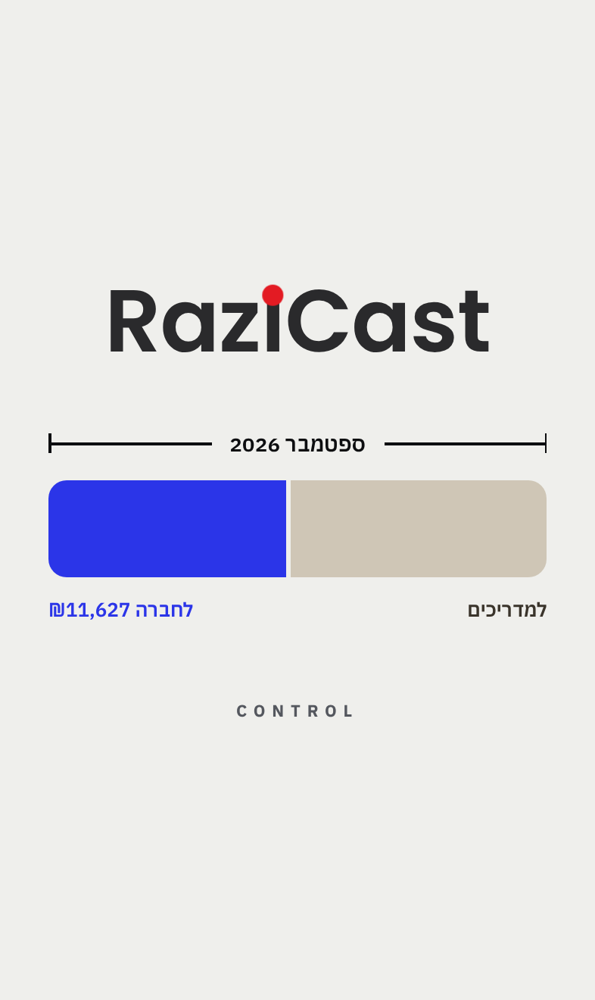
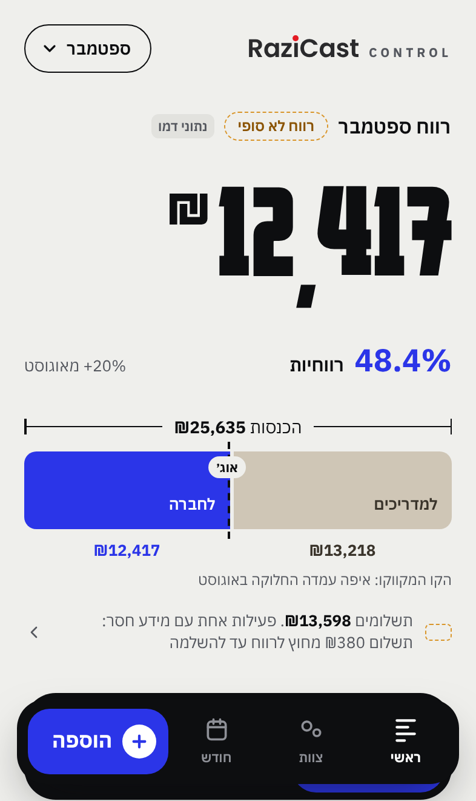
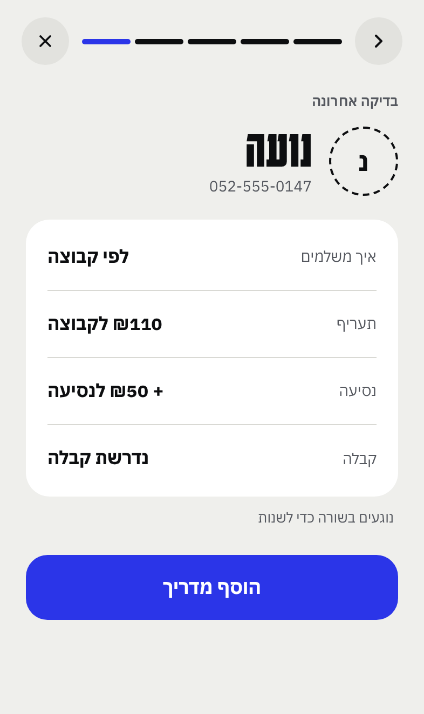
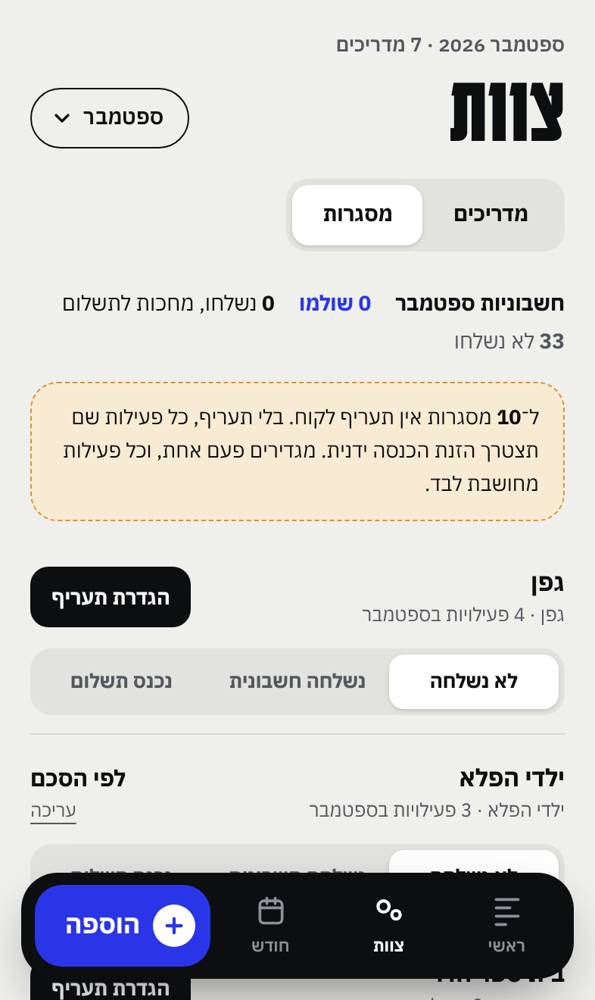
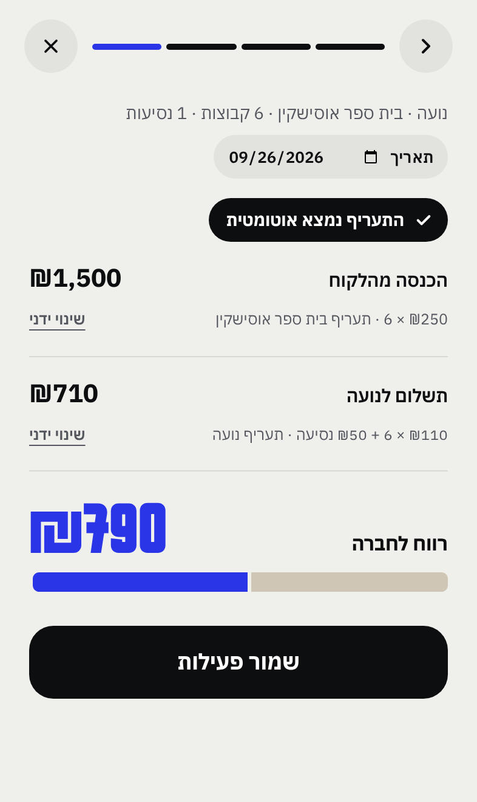
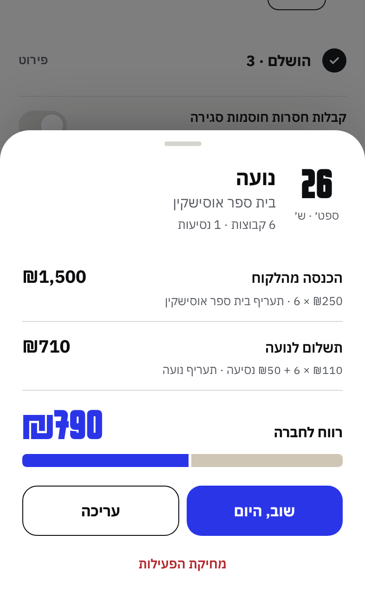
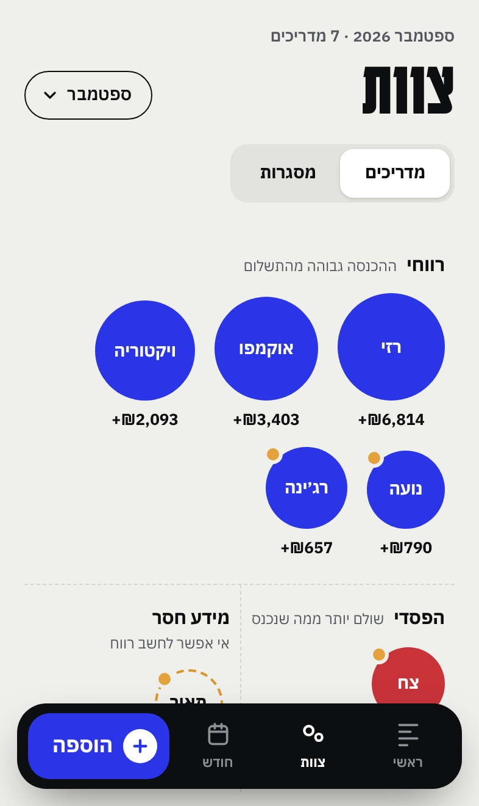
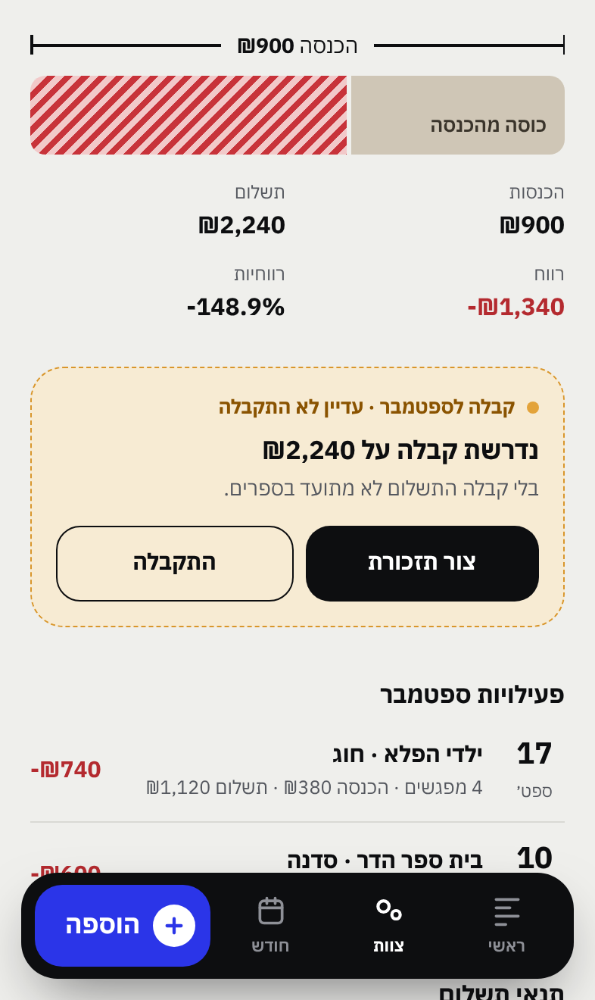
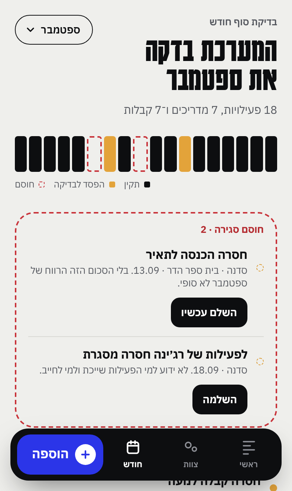
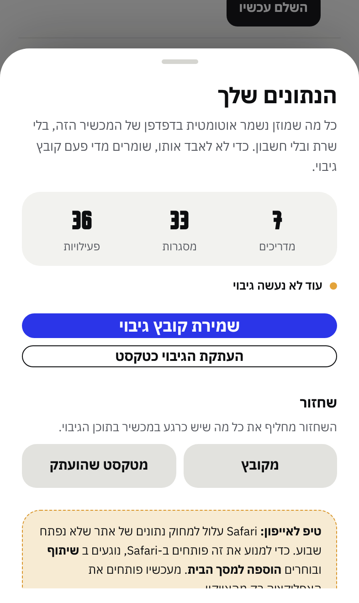

איך עובדים עם האפליקציה ביום־יום: מוסיפים מדריכים, מסגרות ופעילויות, מבינים את המספרים, סוגרים חודש, ושומרים על הנתונים כך שלא ילכו לאיבוד.
על כל פעילות, האפליקציה מחשבת כמה נכנס מהלקוח, כמה משלמים למדריך, וכמה נשאר לחברה. מכל הפעילויות יחד היא בונה את תמונת החודש, ומראה מה דורש טיפול.
ההכנסות נמדדות, ואז מתחלקות לשניים. אותו פס מופיע לחודש כולו, לכל מדריך ולכל פעילות.
זה הצעד הראשון והחשוב ביותר באייפון. מעבר לנוחות, זה מה ששומר על הנתונים.
בכל פתיחה של האפליקציה מופיע רגע קצר: קו מדידה נמתח, הפס מתמלא ומתפצל לחלוקה האמיתית של החודש, והשם עולה. נגיעה במסך מדלגת. אחרי זה המספר הגדול מתגלגל ספרה אחר ספרה.

המספר הגדול. מתחתיו הרווחיות באחוזים וההשוואה לחודש הקודם. אם מופיע רווח לא סופי, יש פעילות עם מידע חסר שעוד לא נספרה.
הפס מחלק את ההכנסות בין המדריכים לחברה. הקו השחור המקווקו מסמן איפה עמדה החלוקה בחודש הקודם: אם הכחול גדל מעבר לקו, נשאר לחברה יותר.
עמודה לכל יום בחודש. הגובה הוא ההכנסה של אותו יום, והצבע אומר מה קרה בו: כחול רווח, פסים אדומים הפסד, ענבר מקווקו חסר מידע. נגיעה ביום מראה את הפעילויות שלו, ויום ריק מציע להוסיף פעילות לאותו תאריך.
הפס השחור עם פעילות, מדריך ומסגרת. מתחתיו "שוב, היום": הצירופים האחרונים, כמו אוקמפו · ילדי הפלא · 4. נגיעה אחת פותחת את החישוב עם התאריך של היום והתעריפים העדכניים.
רק מה שחשוב, וליד כל שורה כפתור שפותר אותה: השלם עכשיו תזכורות בדיקה




נגיעה בכל פעילות, ביומן, בכרטיס מדריך או ביום בדופק, פותחת את כרטיס הפעילות:
שוב, היום אותה פעילות בתאריך של היום. עריכה לתקן כמות, תאריך, מסגרת או סכום. מחיקה, ואחריה כפתור ביטול למקרה של טעות.

המפה מסדרת את המדריכים לפי מצב כספי: רווחי, הפסדי, או מידע חסר (כשאי אפשר לחשב רווח). גודל העיגול הוא ההכנסה, ונקודה כתומה פירושה קבלה חסרה.
הרשימה מתחת: שורה לכל מדריך, עם הכנסה, תשלום ורווח, ומתחת למספרים המצב הכספי והסימונים התפעוליים בנפרד, למשל רווחי · קבלה חסרה · חסר תעריף.

משפט אחד שאומר מה קרה החודש, הפס של המדריך, הפעילויות, תנאי התשלום ומגמה של שלושה חודשים. מכאן גם + הוסף פעילות ועריכת תנאי תשלום.
כשחסרה קבלה מופיעה מסגרת ענבר. צור תזכורת מציג הודעה מוכנה, ושליחה בוואטסאפ פותח את הצ׳אט עם המדריך וההודעה כבר כתובה. כשהקבלה מגיעה: התקבלה.

במסך חודש האפליקציה עוברת על כל הפעילויות, פס אחרי פס, ומחלקת את מה שמצאה לשלוש קבוצות:
חסרה הכנסה, חסר תשלום או חסרה מסגרת. בלי זה הרווח לא סופי. כל שורה עם השלם עכשיו, ואם יש תעריף שמור הסכום כבר ממולא ומחכה לאישור.
קבלות חסרות (עם תזכורת בוואטסאפ) והפסדים אמיתיים לבדיקה (ההפסד נכון מסמן שבדקתם). לא חוסם סגירה. אם רוצים שקבלות כן יחסמו, יש מתג לזה.
מה שכבר תקין.
הכנסות, פחות תשלומים, פחות מה שהוחרג בגלל מידע חסר, שווה הרווח. כשאין חסימות, סגירת החודש, וחותמת "נסגר" נוחתת על החודש. אפשר לפתוח מחדש.
בתחתית: כל הפעילויות לפי ימים, עם סינון לפי מדריך. נגיעה בפעילות פותחת את הכרטיס שלה.

כל מה שמוזן נשמר אוטומטית ומיד, בלי כפתור שמירה. הנתונים נשמרים בזיכרון של הדפדפן במכשיר הזה בלבד, בלי שרת ובלי חשבון.
בתחתית המסך הראשי יש שורה קטנה: "הנתונים נשמרים במכשיר הזה · גיבוי אחרון: לפני X ימים". נקודה כחולה פירושה שהגיבוי עדכני. נקודה כתומה פירושה שעבר יותר משבוע, וגם יופיע ב"דורש טיפול" גיבוי עכשיו.
גיבוי הוא קובץ אחד שמכיל את כל הנתונים: מדריכים, מסגרות, פעילויות, קבלות וחודשים שנסגרו. שומרים אותו במקום בטוח, ואפשר להחזיר ממנו הכל, בכל מכשיר.
אין אפשרות לשמור קובץ (למשל בתצוגה המקדימה)? העתקת הגיבוי כטקסט ומדביקים בפתקים.

יש פעילות בלי הכנסה או בלי תשלום. היא מחוץ לחישוב עד שמשלימים. "דורש טיפול" ← השלם עכשיו.
בכרטיס המדריך או בבדיקת החודש: ההפסד נכון. הוא יסומן כנבדק ויפסיק להופיע.
חסר תעריף. למדריך: כרטיס המדריך ← עריכת תנאי תשלום. למסגרת: צוות ← מסגרות ← הגדרת תעריף.
נוגעים בה ← עריכה, או מחיקה. אחרי מחיקה מופיע "ביטול" לכמה שניות.
מעדכנים את התעריף. פעילויות שכבר נשמרו לא משתנות, וכל פעילות חדשה מחושבת לפי התעריף החדש.
בודקים שפתחתם מאותו מכשיר ומאותו מקום: האייקון במסך הבית, לא Safari, ולא הקישור לתצוגה המקדימה. אם נמחקו, משחזרים מקובץ הגיבוי האחרון.
הכפתור עם שם החודש למעלה, בכל מסך.
תפריט החודש ← איפוס לנתוני הדמו. מומלץ לשמור גיבוי לפני.
כרגע כל מכשיר שומר לעצמו. סנכרון אמיתי בין מכשירים יגיע עם חיבור לשרת, בשלב הבא.